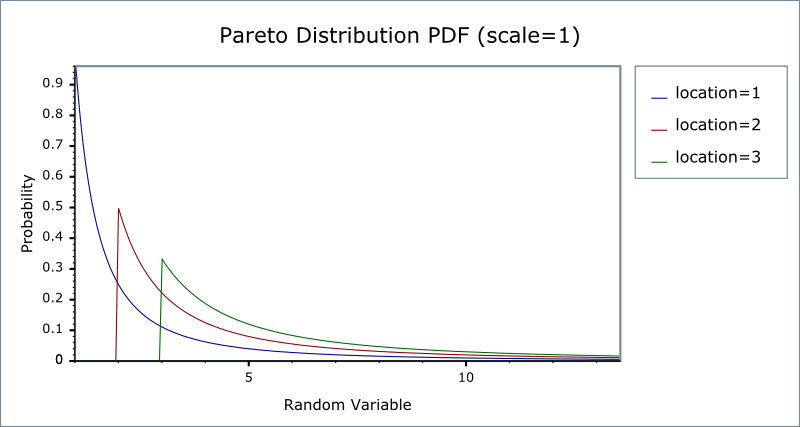
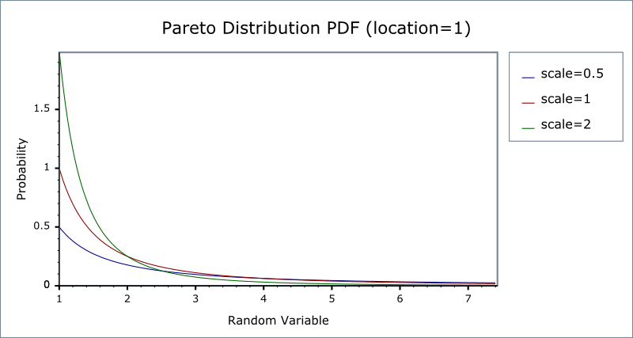

|
Home | Libraries | People | FAQ | More |


#include <boost/math/distributions/pareto.hpp>
namespace boost{ namespace math{ template <class RealType = double, class Policy = policies::policy<> > class pareto_distribution; typedef pareto_distribution<> pareto; template <class RealType, class Policy> class pareto_distribution { public: typedef RealType value_type; // Constructor: pareto_distribution(RealType location = 1, RealType shape = 1) // Accessors: RealType location()const; RealType shape()const; }; }} // namespaces
The Pareto distribution is a continuous distribution with the probability density function (pdf):
f(x; α, β) = αβα / xα+ 1
For shape parameter α > 0, and location parameter β > 0, and α > 0.
The Pareto distribution often describes the larger compared to the smaller. A classic example is that 80% of the wealth is owned by 20% of the population.
The following graph illustrates how the PDF varies with the location parameter β:

And this graph illustrates how the PDF varies with the shape parameter α:

pareto_distribution(RealType location = 1, RealType shape = 1);
Constructs a pareto distribution with shape shape and scale scale.
Requires that the shape and scale parameters are both greater than zero, otherwise calls domain_error.
RealType location()const;
Returns the location parameter of this distribution.
RealType shape()const;
Returns the shape parameter of this distribution.
All the usual non-member accessor functions that are generic to all distributions are supported: Cumulative Distribution Function, Probability Density Function, Quantile, Hazard Function, Cumulative Hazard Function, mean, median, mode, variance, standard deviation, skewness, kurtosis, kurtosis_excess, range and support.
The supported domain of the random variable is [location, ∞].
The pareto distribution is implemented in terms of the standard library
exp functions plus expm1 and as such
should have very low error rates except when probability is very close
to unity.
In the following table α is the shape parameter of the distribution, and β is its location parameter, x is the random variate, p is the probability and its complement q = 1-p.
|
Function |
Implementation Notes |
|---|---|
|
|
Using the relation: pdf p = αβα/xα +1 |
|
cdf |
Using the relation: cdf p = 1 - (β / x)α |
|
cdf complement |
Using the relation: q = 1 - p = -(β / x)α |
|
quantile |
Using the relation: x = α / (1 - p)1/β |
|
quantile from the complement |
Using the relation: x = α / (q)1/β |
|
mean |
αβ / (β - 1) |
|
variance |
βα2 / (β - 1)2 (β - 2) |
|
mode |
α |
|
skewness |
Refer to Weisstein, Eric W. "Pareto Distribution." From MathWorld--A Wolfram Web Resource. |
|
kurtosis |
Refer to Weisstein, Eric W. "Pareto Distribution." From MathWorld--A Wolfram Web Resource. |
|
kurtosis excess |
Refer to Weisstein, Eric W. "pareto Distribution." From MathWorld--A Wolfram Web Resource. |